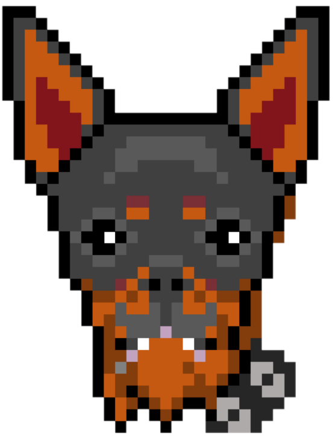

<div class="containerz">
    <<mat-sidenav-container fullscreen>
        <mat-sidenav #sidenav mode="push">
            <mat-toolbar color="black">

                <button mat-button routerLink="''" (click)="sidenav.toggle()">
                
            </button>
                

                <span class="spacer"></span>


                <button mat-icon-button (click)="sidenav.toggle()" color="yellow">

                <mat-icon >
                    menu
                </mat-icon>
            </button>

            </mat-toolbar>

            <mat-nav-list>
                <a routerLink="/getChewis" mat-list-item (click)="sidenav.toggle()">
                    <mat-icon mat-list-icon>account_balance_wallet</mat-icon>
                    <span>
                  Get Chewis
              </span>
                </a>
                <a routerLink="/whitepaper" mat-list-item (click)="sidenav.toggle()">
                    <mat-icon mat-list-icon>picture_as_pdf</mat-icon>
                    <span>
                  Whitepaper
              </span>
                </a>

            </mat-nav-list>

        </mat-sidenav>

        <mat-toolbar class="containered">
            <button mat-icon-button class="icon" (click)="sidenav.toggle()">
          <mat-icon [inline]="true" color="yellow" >
              menu
          </mat-icon>
        </button>

            <button mat-button routerLink="''" class="imgchewi">
            
        </button>

        </mat-toolbar>

        <div class="containerb">


            <router-outlet></router-outlet>


        </div>
        <div class="footer ">
            <div class="container p-7 text-center text-white">
                <!-- Section: Social media -->
                <section>


                    <!-- Twitter -->
                    <a class="btn btn-outline-light btn-floating m-2" href="https://twitter.com/chewbawa" role="button">
                        <fa-icon [icon]="faTwitter"></fa-icon>
                    </a>

                    <!-- telegram -->
                    <a class="btn btn-outline-light btn-floating m-2" href="https://t.me/ChewiToken" role="button">
                        <fa-icon [icon]="faTelegram"></fa-icon>
                    </a>


                </section>
            </div>
        </div>


        </mat-sidenav-container>
</div>